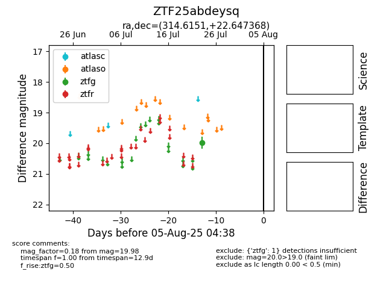

Target ZTF25abdeysq at 2025-08-05 04:38, see:
FINK: fink-portal.org/ZTF25abdeysq
Lasair: lasair-ztf.lsst.ac.uk/objects/ZTF25abdeysq
ALeRCE: alerce.online/object/ZTF25abdeysq
alt names
ZTF25abdeysq (ztf,fink)
coordinates:
equatorial (ra, dec) = (314.6151,+22.64737)
galactic (l, b) = (68.6457,-14.87438)
photometry
last ztfg=19.98
1 ztfg detections
